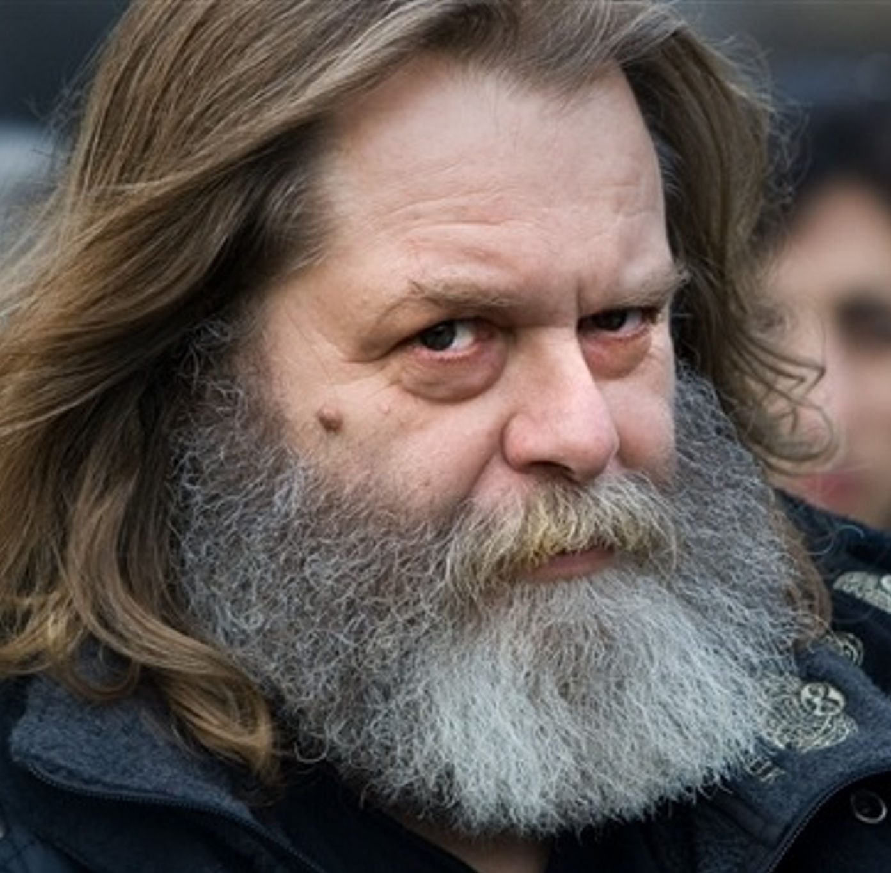
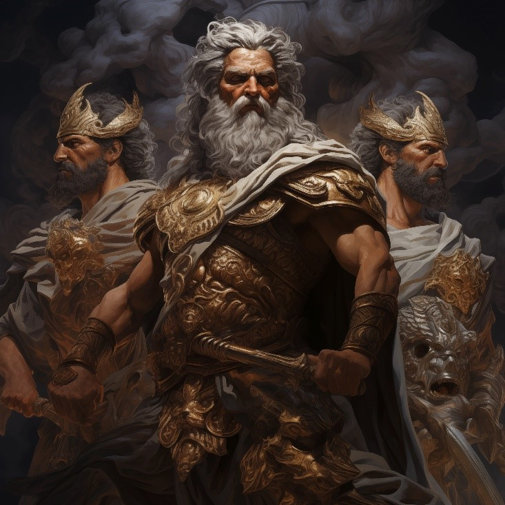

Mon emploi est inutile
'Ton travail sera remplacé par l'IA', on m’a souvent dit cette phrase. Entre mes années d'études à me
casser la tête pour trouver la meilleure idée, à décortiquer toutes les étapes de création qu'on m'a enseignées,
et les concours de dessin que j'ai réussi à remporter, j'avoue que parfois, je me sens dépassé.
Si
j'avais su dès le début qu'on nous aurait largués, que mes fautes de français n'avaient pas besoin d'être
corrigées, que ce n'était pas vraiment interdit de copier, et qu'il n'existe pas de propriété sur une idée, je
ne suis pas sûr que j'aurais mis autant de temps à étudier.
Droits d'auteur : mythes ou réalité ?
Prenons l'exemple de Claude Robinson. Dix-huit ans de débats, 2,5 millions de dollars (sortis de sa propre poche) en avocats et tribunaux. C'est tout ce que cela lui aura coûté. Après tout, le vieil homme s'est fait voler toute une série animée. Au bout de 22 ans, ils ont finalement reconnu qu'ils n'avaient pas seulement volé son idée, mais aussi ses personnages, ses décors et son histoire. Le chanceux a touché le gros lot, et les stations de télévision qui l'ont diffusé ont été contraintes de le payer : un gros 4 millions. Mais... ce gars-là est un cas à part. Tu n'auras jamais d'argent simplement parce que tu étais le premier à y avoir pensé.

Claude Robinson.
Allié ou ennemi ?
C'est le moment de se battre avec CHATGPT et MIDJOURNEY. Sans mentir, ces applications-là vont bientôt pouvoir me remplacer. On m'a obligé, pendant mes années d'études, à m'exposer. À partager sur le web tous mes portfolios, tout ce que j'ai pris le temps de créer. Gratuitement. Youtube, Behance, Facebook, Twitter, Instagram, Google, Bing, Duckduckgo. On me prend mes idées et on me demande de les afficher, en échange d’une pseudo-notoriété. Si tu fais ça, on va te liker, tu vas te faire viewer, puis tu pourras peut-être enfin travailler. Et hop, un petit clic droit, appuie sur copier, et tes images sont parties en fumée... En plus de ceux qui me volent tous mes travaux, les premiers font mieux que moi, à 10 dollars par mois. Mais ça prend quelqu’un comme moi pour les contrôler. Je te laisse y penser avec deux petits gifs qui m’ont pris 1 heure à inventer.
Recettes étudiantes.
Noms de vêtements.
Qu'adviendra-t-il de mon talent ?
Je me sens "outdated"
"Je m'avoue vaincu". C'est ce que je dirais si j'étais contre l'intelligence artificielle. Mais la vérité, c'est que je l'utilise régulièrement. Au début, j'étais comme tous les artistes : déprimé, ravagé, frustré. Je n'arrivais pas à m'adapter, ayant le sentiment d'avoir gaspillé des milliers dans mon éducation. J’ai passé toutes ces années à travailler, pour me faire dire, en sortant des études, qu’on ne nous a pas montré les bonnes affaires. Ça va plus vite avec les banques d’images, les banques de photos, les slogans pré-faits pigés sur internet. Il reste que le dessin, c'est comme la musique. C'est toujours un peu plus séduisant quand c'est toi qui l'as créé.
Pas si facile non plus.
"Ouaip, ouaip, ouaip… t'as juste à cliquer ici, ensuite clique là, appuie ici, écrit ça, et juste comme ceci, blablabla, t’es le prochain Michelangelo de l’IA." Ce n’est pas vraiment comme ça que ça fonctionne. Regarde en bas l'œuvre d’art que j'ai produite, en seulement 16 heures de travail. C'est évident que c'est avec Photoshop, ainsi que mes talents d’artiste.

Clics faciles ne font pas un artiste de l’A…
Puis AI artist, c’est un vrai travail.
L’histoire en abrégé
Mon background
Je suis graphiste depuis 2016. J’étudie dans les branches informatiques depuis que j’ai 12 ans. J’ai étudié en graphisme, jeux vidéo, développement d’applications pour téléphone mobile et design d’objets. J’ai appris à dessiner à la main, au crayon et au feutre, à la règle et au compas. Vinrent ensuite dans mon parcours les tablettes électroniques et numériques, le dessin technique, assisté par ordinateur, en vectoriel, et finalement, l’IA. J’ai commencé à traduire et corriger avec un dictionnaire. Ensuite Microsoft Word, Google, Antidote, puis finalement, l’IA. J’ai appris à filmer, photographier et retoucher avec un vieux Kodak, aux photos et films sur papier, au cellulaire, sur Photoshop et finalement, l’IA (FaceApp, si tu connais pas). On peut continuer comme ça dans plusieurs domaines. J’ai laissé un petit carrousel des traces de mon parcours scolaire pour que tu vois comment on créait, avant. Tu peux aussi cliquer sur mon portfolio, (Clique sur Infotricks, le logo à gauche), si tu veux voir mes réalisations, entièrement faites SANS l’aide de l’IA. Sauf pour le carrousel, les crédits reviennent à ChatPT.

Affiche Adobe Illustrator.

Programmation bootstrap mobile

Dessin à main tablette numérique.

Dessin à main tablette tactile

Double exposition photographie et photoshop. Canon EOS M50
Logo illustrator.

Dessin Tablette à dessin.

Mise en page InDesign

Dessin au feutre

Sketch idéation crayon de bois.
Mes recherches.
20 ans à fouiller le web, de fond en comble. 15 ans à jaser presque chaque soir avec mes potes, sur Discord, à propos des nouvelles techno, les gadgets hi-tech et les avancées scientifiques en informatique.
Remplacés ?
Ça se peut.
Ça sera surement plus jamais comme à la belle époque. Tu ne sera plus payé 25 cennes à chaque mot que tu traduis. On va perdre des jobs comme dessinateur, concepteur, idéateur, traducteur, mathématicien, révisionniste, correcteur. C’est dommage.
On te facilite la vie, mon ami !
Fini le syndrome de la page blanche, t’auras jamais été aussi inspiré, t’as seulement à écrire ce que t’as en tête. T’auras plus non plus besoin de prendre 2 semaines à faire une page couverture. T’as seulement à l’imaginer. Tu peux même corriger sans dictionnaire. Si ça t’intéresse de rejoindre les passionnés d’IA, et de rejoindre le côté sombre de la force, je t’ai laissé quelques ressources ici-bas, ou à la page suivante.
Ressources et documentation.